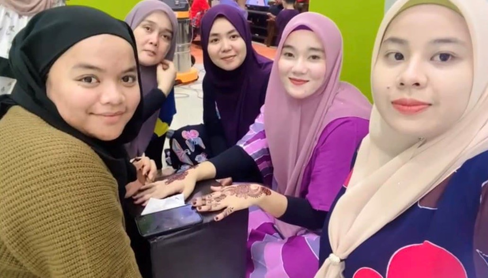
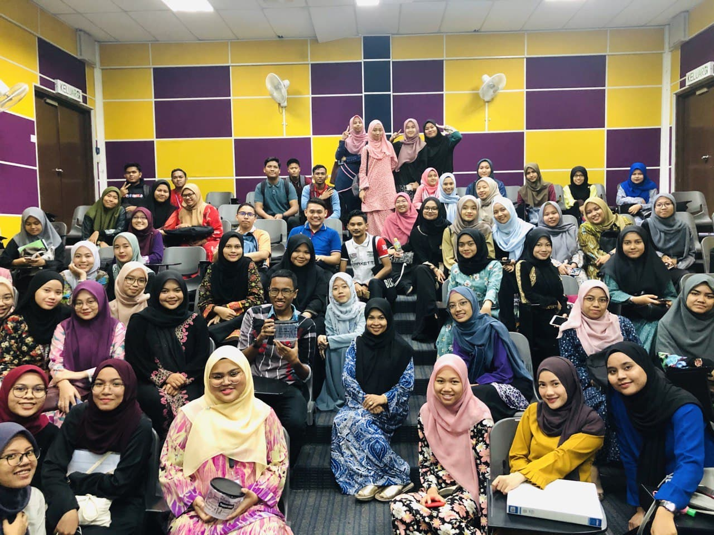
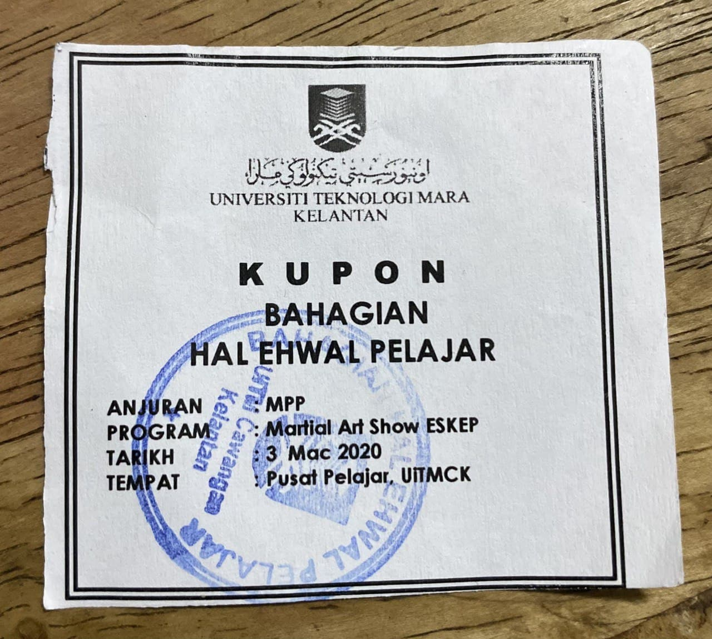

|
In this era where the economy is so bad due to a pandemic that shocked all the people and has also caused the people's finances to be bad, business is a way for the people to earn their living and also take care of the family finances. So that, I choose to keep run my business which is Henna Art Services. This service is a service that need to be provide from house to house of any customers. Plus, for me, this service is quite unique and limited because not everyone is talented and can do this kind of job. Furthermore, the income that can be earned from this business and services are also very rewarding and satisfying because the market prices for each art are quite high among professional Henna Artists. Apart from that, this activity or task also gave me a lot of experience as a Henna Artist who just new and wanted to tame myself in this Henna’s field. Other than that, among the other experiences that I have got was I had the opportunity to get acquainted with many more strangers who were become my customers which are not from my closest connections. There are also many various types of temperaments I have encountered and faced myself as a Henna Artist. Even that, I also always get good feedback from my customers and they are all very satisfied with my carving and henna results even though I am not a professional henna artist. With this, it to some advance to give me the motivation to continue working in this field and continue to make it a permanent career for me in the future.

Me and my customers In addition, I also feel very satisfied when all of my customers give and share positive feedbacks. It also gave me the motivation to keep fighting in this field and work. In addition, with this task which aims to expose students to the world of business, it helps me a lot to gain various knowledge in business and I also have the opportunity to learn many tactics and ways to succeed in the business. Among the things that I have learned is that as an entrepreneur, we should always have the passion and mission in business to always achieve the success that every entrepreneur should have and desire in ourselves. Next, among the benefits that I can learn from my experience is that I get a lot of income and it is very worthwhile for me who is a student. Furthermore, this can also help me to provide pocket money to spend either related to needs or wants which can also be called as self-reward. In addition, this service also does not require a lot of energy like other services. And then, I also have experience doing this work in pairs with my partner who is also a professional Henna Artist. It also means a lot to me to find new experiences and knowledge in the world of henna. With that said, I am very interested in the work I am doing and of course I will continue it as a permanent career in the future after I finish my diploma years. Moreover, previously I was only known among close connections such as friends, relatives and neighbours. Then, through my closest regular customers, the service and business become more growing when they recommend my contact to their friends and other connections who may want to hold an event such as an engagement or wedding. So that, I can also take this opportunity to be better known to many and also have regular customers. Most of my clients that I accept their offers to have my services are only people who are close to my area. At the same time, I also use social media sites to promote about the services I provide to the public. I also put my WhatsApp number in the Instagram page to make it easier for anyone who wants to book for their event. Next, about the supplier for the henna that I use for my customers, she is an acquaintance of mine from the social media Instagram. I will get henna stock from her who is also a Henna Artist and she is quite professional with skills in this field for a long time. I also have learned and gain some knowledges about henna from the videos that she has shared in her social media Instagram. Other than that, I also learned about tips related to henna. Plus, this service will definitely involve my movement from house to house of my customers. And they also usually having me for the service at night. This is because my customers are made up of brides and they need my services to have a henna night with their family members. However, there are also customers who come to walk in to my house to wear henna. So that, I really hope that I will be able to grow further one day and will be a professional and successful Henna Artist. |
|
First semester is definitely a starting point for all students to step into a new chapter in life which is the university world. It must be very different from the school phases because the university world teaches us to live independently and learn to find our own information and knowledges no matter where and how it is. Besides, I also learned a lot of related things to this course. For example, about the basic concept in management course. Furthermore, this course also involves other topics such as the differences between library science and information science. This topic is quite interesting for me as a new student in this course. In addition, there are also some subjects combined 3 classes into 1 class. With this, I was able to get acquainted, exchange ideas and study together with other classmates together.

Combined classes Plus, in this semester as well, I also experienced visiting Tengku Anis library. I always use all of the facilities that available in the library. Among them are photostat service, computer, Wi-Fi and so on. The Tengku Anis Library is also a very comfortable place for me to study with my friends and find the materials needed to complete all the assignments given by the lecturer. Therefore, I was able to learn about new things that I never knew before which is related to the use of OPAC. This is one of the online databases that available in the library to make it easier for students or users to find the materials that they need in the library. In addition, I always involved myself with the programs held and collect a lot of coupons and it is a “ticket” for students to stay in college instead of renting a house outside the university.

Coupons Besides, there are some disclosures about the SRC on semester 2 which are related to the concept and description of SRC, objectives and also historical development of SRC. In addition, I have also learned new topics that are about the types of resources available in the library which are online resources, media resources such as CD ROMs, Hard-copy print such newspapers and also artifacts of realia or objects. There is also about the service delivery options which divided into two that is resource center & information service free and also marketing, promotion and public relations. Other than that, I was also exposed to mock interviews that were important for students. This is because it gives the experience to the students for identifying and feel as if the real interview is for future. It is also to evaluate the communication skills and self-confidence that each student has. Semester 3 is the beginning semester for ODL for every student and this is definitely a new thing for us and maybe for all the students in the world. Literally, this semester is related about the records management which is electronic material such as the concept of electronic records and also how to manage it. At the same time, this semester has been a bit difficult for me because I am not yet familiar to online learning things. In addition, in this semester, I can also get to know several new software for photo editing work such as adobe photoshop, adobe InDesign and also adobe illustrator. Although it was a bit difficult to go through all this, but I still enjoy my journey as a university student. Next, semester 4 was also an interesting semester as I learned about technical support and maintenance for information agencies. This revealed me more deeply about every types of computer components. This also includes several types of computers. Among them are supercomputers. It is a very interesting computer because it is the most powerful type of computer with high capacity that is used by very large organizations. If I had the chances, I would visit a place where there is this computer and see it face-to-face. In addition, I was also learned about the use of video editing software which is Adobe Premiere Pro. This is a very important knowledge and skills to be use in the future when I am already working with any organization soon. Last but not least, semester 5 is a final semester in the Information Management course. I didn’t expect time to pass so quickly and it has taken me to my final year as a university student. In this semester, it also has its own challenges. Among them, I was exposed to subjects related to websites and the internet. It is also a bit difficult for me to learn something literally new which is about HTML and I need to memorize all of the codes to complete existing tasks and assignments. I also need to always make my own exercises to understand this complicated subject. In addition, in this semester, I also gained experience in handling the organization of programs involving external speakers and all of my classmates. I have been as an AJK for Biro Multimedia. Surely, this experience is very important for me to use it in the future if there are any activity related to programs be held in my company that I will work for. To sum up everything that has been stated so far, there are many new things that I have learned from this university life. Other than that, I also have many sweets and bitter experience with my friends while in class or out of class throughout this course. Even sometimes I have the feelings like tired mentally while go through online study, at the same times I have friends who always supportive and encourage me to finish the study happily. Plus, I love enjoying my study in this course. |